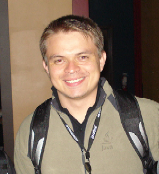

Series: Meet the Dream Team Members
(In January 2007, we announced the 11
charter members of the NetBeans
Dream
Team, a community-oriented group of highly skilled NetBeans users
devoted to promoting NetBeans and working on the NetBeans Project. In
these interviews discover who they are, why they are passionate about
NetBeans and what goals they have for the NetBeans project.)
Edgar Silva

Please
tell us a bit about yourself.
I work for Red Hat in Brazil as a Solutions Architect in the Sales
Engineers Department. I am responsible for many areas related to JBoss
products in Brazil, such as helping customers to use JEE, SOA and
Middleware technologies properly.
Additionally, I have been actively helping the Java Community in Brazil
(SouJava) since 2004. Before
that, I was the founder of the Belém Java User
Group (BelJug). Belém is my native city, and located in
the Amazon region. Nowadays, BelJug is now known as SouJava
Belém.
Can you describe your introduction to NetBeans?
I tried NetBeans 3.x for the first time in 2002 when I was a Java
training instructor. At that time, teaching Java Web Development with
NetBeans was great because even resources to create new TagLibraries
was available in the IDE. So it was really easy for students to focus
on relevant issues and not spend as much time configuring XMLs and
descriptors. Working in NetBeans even helped people who were studying
for Sun's Java Web certification.
But I became an official NetBeans user in 2004 after working with my
friend Cláudio Miranda at Caixa Economica Federal's Project, and
after meeting Charlie Hunt and Tim Boudreau; all three are NetBeans
evangelists.
What stands out for you in the evolution of NetBeans?
It is really impossible for anyone not to agree on NetBeans's
evolution, or what I call the “NetBeans Revolution”. Before the
improvements, IntelliJ was the leader when we talked about innovation;
now this is changing, and you can see it in the incredible new
features available in NetBeans, such as the Matisse GUI builder which
is revolutionary when you're talking about GUI design in Java Swing. I
can't forget the integrations with the Application Servers, and
interesting plugins such as the JBoss Seam NetBeans Plugin.
I am also impressed with the NetBeans Platform. If people read the new
Rich
Client Programming book by Tim Boudreau, Jaroslav Tulach and
Geertjan
Wielenga, I'm sure they'll understand the true power of the NetBeans
Platform. It is really awesome that it gives you a chance to control
your applications and do whatever you want.
How do you work in the NetBeans environment?
I often create plugins that I call my toys. But I am not the kind
of user who knows all the short-cuts and hidden tricks. I've not
bothered with that since I did a Jbuilder certification. Why do you
need to know ALL of them if you have a good and comfortable mouse?!
What does it mean for you to be a member of the Dream Team, and
what do you hope to accomplish during your term?
First of all, to be a "Dreamer" for me is a big pleasure because I get
to talk with many other talented people from different areas of life
and the world. It's a good way to keep informed about NetBeans and many
Java-related technologies. The NetBeans Dream Team, in my opinion,
might be the strongest link between the Community and NetBeans's
Development team. My hope is that by listening to our ideas and those
of the community the NetBeans Team will turn NetBeans into a true
community-driven project.
Have you started to communicate with the development team?
Yes, we've talked a lot about platform development and internal issues.
One particular thread was about the Diff Module in NetBeans IDE.
Before the Dream Team, how were you involved in the NetBeans
Community?
I blogged frequently on my Java.net blog, created
screencasts, and gave
many talks in Brazil. In the past, I also evangelized frequently about
NetBeans to SouJava, and tried to show how valuable NetBeans was for
any
development team. I still do all of these things. One of my plans now
is to spend some of my free time creating integrations between JBoss
projects and NetBeans, mainly JBoss Seam and JBoss Rules.
You maintain two blogs.
Yes, I do. One in Portuguese,
in
which I
talk about various things, from my family to new Classloaders issues;
and the second in
English at Java.net that I've already mentioned. It's more serious
because I talk about Java technologies and NetBeans.
Is the NetBeans IDE popular among Brazilian developers?
When we talk about IDEs in Brazil, NetBeans is a real choice. This is a
result of the excellent evangelizing done since 2004 by people such as
Tim Boudreau and Charlie Hunt. They're not Brazilians but these guys
almost speak Portuguese well because of their many, many trips all over
Brazil, presenting and
talking about NetBeans, and carefully teaching from the basic to the
deep
details. I think they've had a great time in the process: Charlie, for
example, was in Belém, and tried Açaí, an amazing
fruit from the North, while Tim, in Porto Alegre, enjoyed the very best
barbecues from the Southern region of Brazil.
But I can't forget about one other person, who for me is the most
important NetBeans evangelist from/in Brazil: Claudio Miranda. He does awesome
work
promoting NetBeans in Brazil: testing, reporting
bugs and working hard at being the NetBeans Guy around here. He not
only speaks about NetBeans at important Java events in Brazil, but he
also blogs about it in English and in Portuguese. In the past, we
promoted the NetBeans Plugins Contest, which motivated
many teams to create very creative and valuable plugins for NetBeans
users not only in Brazil but all over the world.
You and three members of the Dream Team made an appearance at
JavaOne. What was that event like for you?
I enjoyed it. I talked to many people at JavaOne about NetBeans and EJB
3.0, the subject of my Technical Session there, because developing
EJB 3 Applications using NetBeans is really easy nowadays. I believe
that the community needs to know more about Dream Team, and interviews
like these are good. The community needs to know that we are real
people and than they can trust in our visions and our work together
with NetBeans Development team.
How would you rate the current progress of the Dream Team?
Personally, I've been “hibernating” in the last two months because I've
been really busy, but there are some Dream Teamers who NEVER STOP! I
read many of their e-mails, and respond to important ones. Overall,
I'll echo Bruno Souza who said, “I think we are 'walking'”, which is
better than standing still.
Are you working on any projects that involve NetBeans?
I have many projects, but my special one is called Greenbox, which I
founded. Greenbox is a code-generator framework based on the principles
of MOF –
Metamodel
Object Facility. I created the project in 2002 due to the need to
prove to customers
that Java could be as productive as environment as Delphi or MS Visual
Basic. In 2005, I created the NetBeans Greenbox plugin, which generates
Web
Applications on top of technologies like JSF, Hibernate and Spring.
As part of this work, I presented a BOF at JavaOne 2006 with Alexandre
Gomes, about how we created this plugin, which used many NetBeans
resources, such as MBR, which is the MOF implementation inside the
NetBeans
platform before NetBeans 6.0. MBR
in NetBeans
6.0, as far as I know, is gone or almost gone! So the people from
Greenbox might change something to be able to generate codes using
NetBeans plugins. They can do that easily using Java standard
resources.
I'm very proud of Greenbox even though I am no longer the main
developer and there are many other people involved in it. A while ago,
I asked another Greenbox developer about how to solve an
issue, and he said to me: "But you are the creator! How don't you know
anything about it?" My answer was: "Greenbox does not belong to me.
There have been so many improvements that I'm like a newbie developer.”
This is the magic and one of the best things about open-source. Those
who are interested can find more information on the Greenbox website and can reach
many
developers working on it there.
What do you do in your spare time?
I love martial arts and study their philosophies. I've been training in
Jiu-Jitsu since 1990. I am planning a social
project involving Jiu-Jitsu and children in Brazil. My plan is to teach
two hours of Jiu-Jitsu and the philosophies of martial-arts, such as
discipline, respecting others, respecting the limits, respecting the
hierarchies and so on. And after the Jiu-Jitsu training, I can help the
kids with their school work, such as Math, Portuguese, History and so
on. I am saving a bit of money to start it because a Kimono is not as
easy
as to buy as a soccer ball, and a Tatame—a training room—is not as easy
to find as an empty area to play soccer. I hope to start it soon.
Furthermore, as I am a Brazilian, I love to play soccer! Unfortunately
in São Paulo, my circle of friends don't like to play, but when
I return to Belém, I try to play with my friends there.
At a time you considered becoming a Jiu-Jitsu instructor, why did
you go into the technical field?
In Brazil, working as a Jiu-Jitsu instructor is really challenging
because we have really good professionals here, and to work in the
sport, you must be really dedicated and skilled. When I broke my hands
and developed problems in my knees, I said to myself: “I don't want to
be an 'almost good' professor”, because to be a GOOD instructor or a
great one, you must stay in the competition all time. So I decided on
an engineering career, not because it was easier, but because I loved
it as well. This made my dad happy.
Are there philosophies from your martial arts training that you
apply to your work as a developer? Do the two complement each other at
all?
Absolutely! They are similar in that in both you must respect others
and your own limits. As I mentioned before: you must respect the
hierarchies; know
that there are winning days, but also know how to manage the days that
you lose and try to identify your mistakes.
This is the first time that I'm talking about this passion of my
life—martial arts—and how it relates to my professional life. Many of
my IT friends are not interested in hearing about it. So, thank you for
giving me the opportunity to do so.
Which is harder to master: Jiu-Jitsu or Java?
Well, both are changing and getting better all time, so it's really
hard to answer. Personally, I am better at Java than at Jiu-Jitsu,
maybe because I spend 10 hours a day on Java, and only two hours on
Jiu-Jitsu. But both are really similar because you need to study,
create and innovate!
Edgar, thank you for this interview. Good luck with your projects
and the Dream Team.
(June
2007)
More Dream Team Profiles
Adam
Bien
Emilian
Bold
Vincent
Brabant
Wade
Chandler
Fabrizio
Giudici
Joerg
Plewe
Vinicius
Senger
Ibon
Urrutia